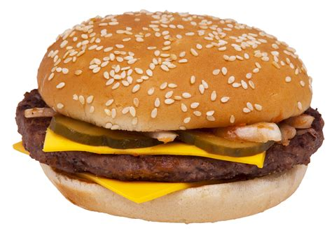

Cheese Burger

Description
A cheeseburger is a burger with a slice of melted cheese on top of the meat patty, added near the end of the cooking time. Cheeseburgers can include variations in structure, ingredients and composition. As with other hamburgers, a cheeseburger may include various condiments and other toppings such as lettuce, tomato, onion, pickles, bacon, avocado, mushrooms, mayonnaise, ketchup, and mustard.
In US fast food restaurants, processed cheese is usually used, although other meltable cheeses are used, such as cheddar, Swiss, mozzarella, blue cheese, or pepper jack. Restaurant chains that sell cheeseburgers include McDonald's, Burger King, and Wendy's.
Ingredients
- Ground Beef
- Cheese
- Burger Buns
- Lettuce
- Tomato
- Onion
- Condiments
Steps
- Shape the ground beef into patties, season with salt and pepper, and cook them on a grill, stovetop, or griddle until your desired level of doneness is achieved.
- During the last minute of cooking, place a slice of cheese on each patty and cover with a lid to allow the cheese to melt.
- Toast the burger buns slightly on the grill or in a toaster until they have a light crunch on the surface.
- Assemble the burgers by placing a lettuce leaf on the bottom half of each bun, followed by the cooked patty with melted cheese. Layer on the sliced tomatoes and onions.
- Add condiments of your choice, such as ketchup, mustard, and mayonnaise, on the top half of the bun.
- Optionally, add any other ingredients you desire, such as pickles, bacon, avocado, etc.
- Place the top bun over the assembled ingredients to complete the cheeseburger.
- Serve the cheeseburgers with a side of fries or your favorite accompaniments.